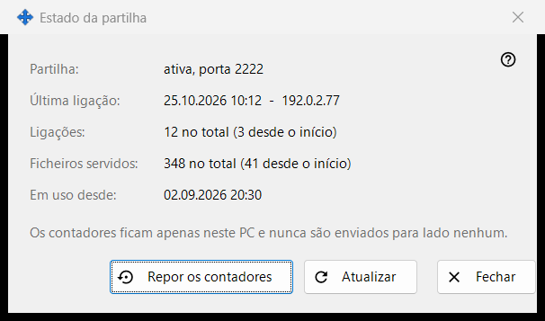
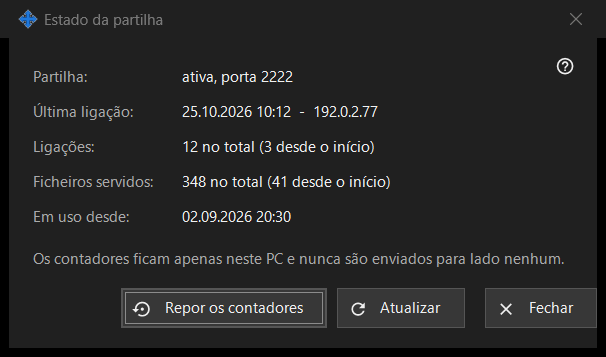

Estado da partilha
Finalidade
Mostra o estado atual da partilha e os seus contadores simples. Abre-se a partir da ligação «Estatísticas» da janela principal.


Nesta ordem
- Leia o estado no topo.
- Verifique a última ligação, o número de ligações e os ficheiros servidos.
- Prima «Atualizar» para obter valores novos.
- Prima «Repor os contadores» para recomeçar as contagens.
- Prima «Fechar».
Os elementos
Estado
«Partilha:» indica se a partilha está a funcionar e em que porta, ou que está desligada, ou que o worker não está disponível. «Em uso desde:» mostra quando a partilha foi iniciada.
Contadores
«Última ligação:» mostra a hora do último telemóvel, ou «nunca». «Ligações:» e «Ficheiros servidos:» mostram o total e, entre parênteses, o número desde o último arranque. Os contadores ficam apenas neste PC e não são enviados para lado nenhum.
Atualizar e repor
«Atualizar» volta a ler os valores do servidor. «Repor os contadores» pergunta primeiro: os valores anteriores não podem ser recuperados. Se a reposição falhar, o botão mostra «A reposição falhou». «Fechar» sai da janela.
Definições do gestor · Definições de partilha SFTP · Definições do servidor de troca